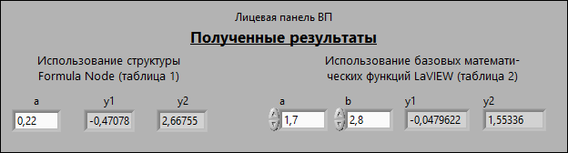
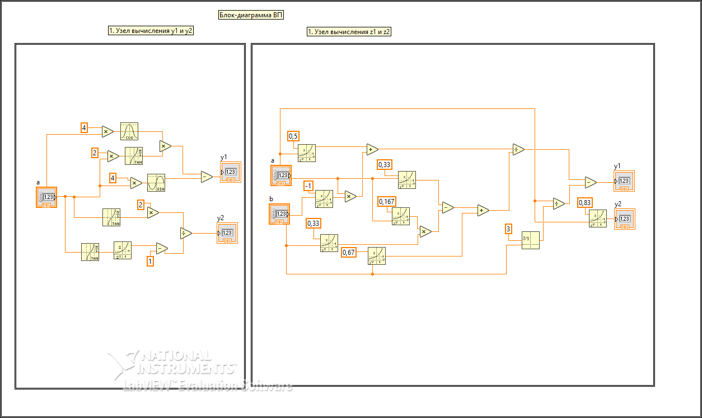

Лабораторная работа №1
Задание для варианта №14
- Разработать виртуальный прибор, который вычисляет значения двух эквивалентных числовых формул y1 ≈ y2, z1 ≈ z2 с указанными в варианте индивидуального задания значениями исходных данных;
- Вычисление числовых формул y1, z1 выполнить с помощью структуры Formula Node;
- Вычисление числовых формул y2, z2 выполнить с помощью базовых математических функций LabVIEW.
Примечание
Две числовых формулы эквивалентны, если для всех возможных значений переменных их математические значения равны. Будем считать, что значения эквивалентны, если они отличаются не более чем на 10-5

